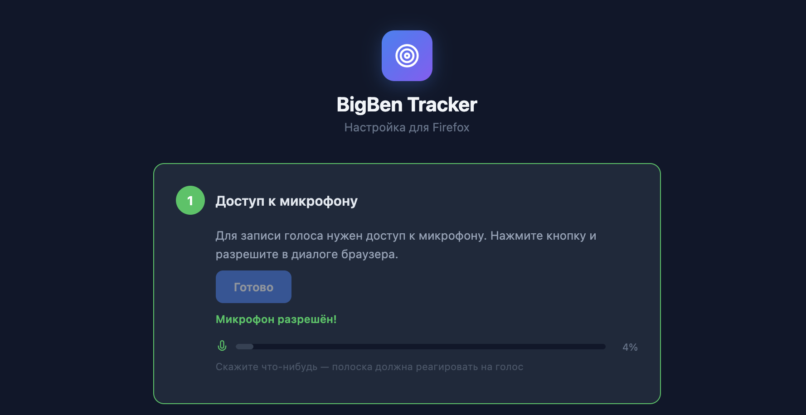
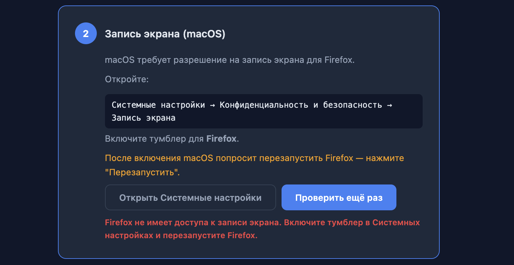
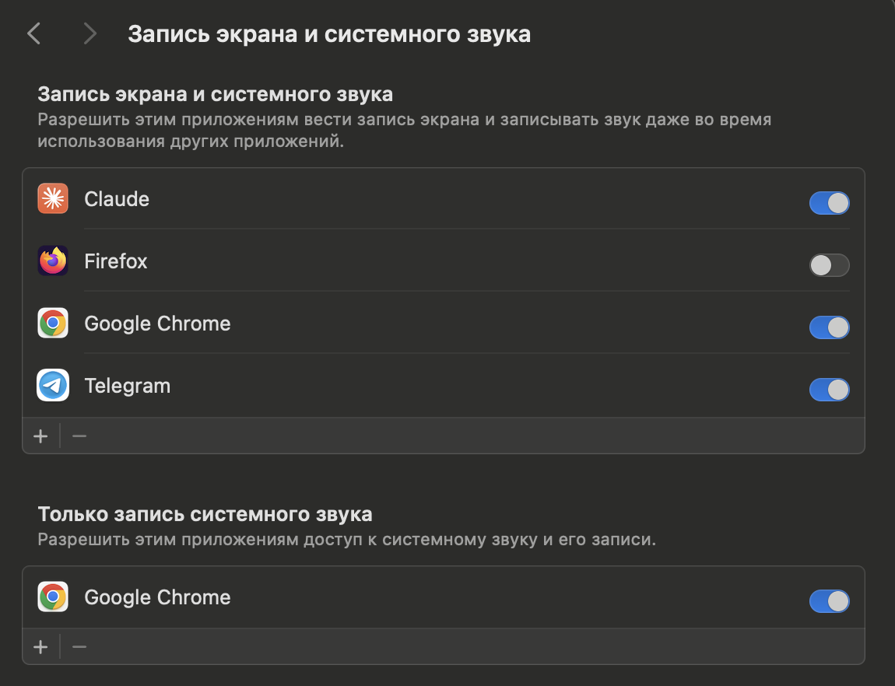
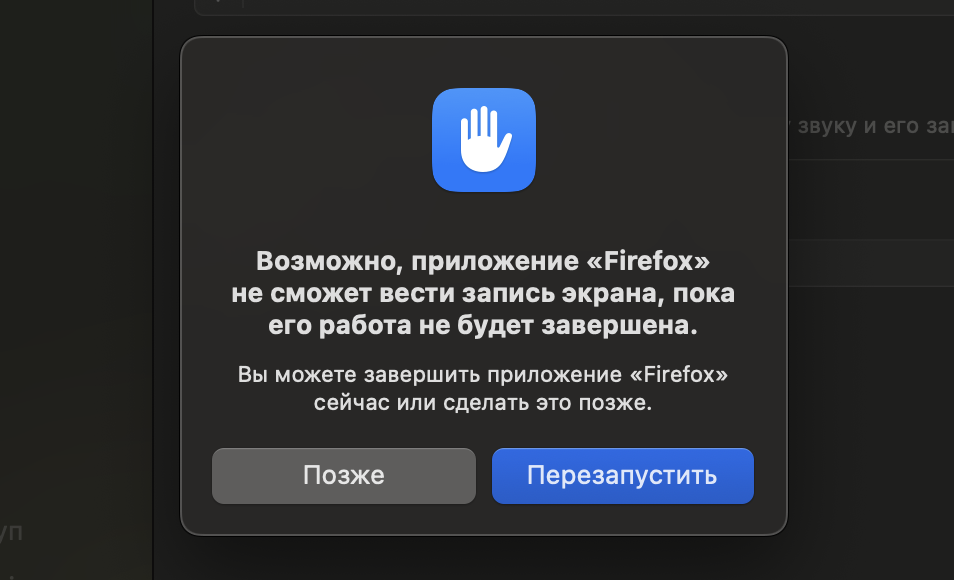

BugReel
Record your screen, describe with your voice — AI creates the card.
Review and send to your issue tracker.
1Install the extension
The extension works in Chrome and Firefox. Choose your browser:
Download for Chrome (ZIP)
- Extract the archive to any folder
- Open in Chrome:
chrome://extensions
- Enable Developer mode (top right)
- Click "Load unpacked"
- Select the
extension folder from the archive
- Pin the extension: puzzle icon → pin BugReel
Microphone — check immediately after install!
After installing, open the extension, enable Microphone and make sure Chrome prompts for permission.
If there was no prompt (especially on Windows) — restart the extension:
chrome://extensions → disable BugReel → enable it again.
Restarting the browser does not help — you need to restart the extension specifically (toggle off/on).
Download for Firefox (ZIP)
- Extract the archive to any folder
- Open in Firefox:
about:debugging#/runtime/this-firefox
- Click "Load Temporary Add-on"
- Select the
manifest.json file from the extracted folder
- The extension will appear in the toolbar — pin it (puzzle icon)
Temporary extension
In Firefox, the extension is loaded as "temporary" — it will be removed when Firefox restarts.
After restarting, you need to load it again via about:debugging.
Setting up permissions (first time)
On first install, a setup page will open automatically. Follow these 2 steps:
Step 1. Microphone
Click "Allow microphone" → grant permission in the browser dialog. After that, a level indicator will appear — say something, the bar should respond.

Step 2. Screen recording (macOS)
macOS requires a separate permission for Firefox to record the screen.

Open System Settings → Privacy & Security → Screen Recording and enable the toggle for Firefox:

macOS will ask to restart Firefox — click "Restart":

This is a one-time setup
After restarting Firefox, permissions will be saved. No need to set up again.
Differences from Chrome
- A "Recorder" tab opens during recording — do not close it while recording is in progress. It automatically goes to the background.
- Firefox shows a system source picker (tab / window / entire screen) — this is normal.
- Tab capture works through the shared picker (in Chrome it is automatic).
Pre-flight check
Make a short test recording (5-10 sec) with audio and verify that your voice was captured. This helps avoid losing your first real recording.
2Recording
- Open the page you are testing
- Click the BugReel icon in the browser toolbar
- Select your name (Author)
- Source: Tab or Screen
- Make sure Microphone is enabled
- Click Start Recording
- Speak aloud what you are doing and what you see
- Click Stop — the video will upload automatically
Golden rule: narrate out loud
AI creates the description from your voice. The more specific you are — the more accurate the card.
"I click here, it doesn't work" — bad
"I click Save in the employee form, expecting it to save, but the form freezes" — good
3Link to an issue
Right after uploading, without waiting for processing:
- Click the Issue Tracker button (blue, top right)
- Find the issue — filter by user, project, status
- Or enter an ID (e.g.
BUG-42) in the search
- Click on an issue → confirm
The link is saved as a draft. Nothing is sent to the tracker until you click "Send" in step 4.
No need to wait
Link it → move to the next task → record → link. Come back later and send them all.
4Review and send
When processing is complete (30-60 sec), an AI-generated card will appear on the page.
Checklist before sending
- Is the title clear? → click Edit
- Do the screenshots show the problem? → add by clicking on the timeline
- Did AI describe the bug correctly?
Sending
Linked to an issue (yellow badge): click Send
New bug: Issue Tracker → Create new issue (bottom of the list)
Batch testing
- Record #1 → link → next
- Record #2 → link → next
- Open the dashboard → filter "Not sent to tracker"
- Review and send one by one
In the extension (RECENT): ... processing • review awaiting review • BUG-14 sent
Tips
- 1 recording = 1 issue. Three short videos are better than one long one.
- Show the path. AI will record the URL and navigation.
- Console errors are captured automatically. No need to open DevTools.
- You can add screenshots. Click on the timeline at the right moment.
FAQ
No audio in the recording
- Is Microphone enabled in the extension? Is the level indicator (bar) moving?
- Chrome: Did Chrome grant microphone permission? If not — restart the extension:
chrome://extensions → disable/enable BugReel
- Firefox: Open the extension setup (link "Firefox Setup" at the bottom of the popup) and complete step 1.
- Windows: Chrome may not prompt for the microphone automatically. After restarting the extension, open it again and enable Microphone — a prompt should appear.
Processing takes longer than 3 minutes
Refresh the page. If the status is "error" — record again.
Can't find an issue
Reset filters: All users + All projects + All (incl. resolved). Or enter the ID in search.
Can I edit the card?
Yes, click the Edit button — title, type, description.
Firefox: why is there a Recorder tab?
Firefox does not support the offscreen API (unlike Chrome). Screen recording can only work in an active tab. The "Recorder" tab automatically goes to the background after recording starts. Do not close it — the recording will stop.
Firefox: extension disappeared after restart
Temporary extensions in Firefox are reset on restart. Load it again: about:debugging → "Load Temporary Add-on" → select manifest.json.
BugReel
Записывайте экран, комментируйте голосом — AI создаст карточку.
Проверьте и отправьте в трекер задач.
1Установка расширения
Расширение работает в Chrome и Firefox. Выберите браузер:
Скачать для Chrome (ZIP)
- Распакуйте архив в любую папку
- Откройте в Chrome:
chrome://extensions
- Включите Режим разработчика (справа вверху)
- Нажмите «Загрузить распакованное расширение»
- Выберите папку
extension из архива
- Закрепите расширение: иконка пазла → закрепить BugReel
Микрофон — проверьте сразу после установки!
После установки откройте расширение, включите Микрофон и убедитесь, что Chrome запросил разрешение.
Если запроса не было (особенно на Windows) — перезапустите расширение:
chrome://extensions → выключите BugReel → включите снова.
Перезапуск браузера не поможет — нужно перезапустить именно расширение (выкл/вкл).
Скачать для Firefox (ZIP)
- Распакуйте архив в любую папку
- Откройте в Firefox:
about:debugging#/runtime/this-firefox
- Нажмите «Загрузить временное дополнение»
- Выберите файл
manifest.json из распакованной папки
- Расширение появится на панели — закрепите его (иконка пазла)
Временное расширение
В Firefox расширение загружается как «временное» — оно будет удалено при перезапуске Firefox.
После перезапуска нужно загрузить его снова через about:debugging.
Настройка разрешений (первый раз)
При первой установке автоматически откроется страница настройки. Выполните 2 шага:
Шаг 1. Микрофон
Нажмите «Разрешить микрофон» → дайте разрешение в диалоге браузера. После этого появится индикатор уровня — скажите что-нибудь, полоска должна реагировать.
Шаг 2. Запись экрана (macOS)
macOS требует отдельное разрешение для Firefox на запись экрана.
Откройте Системные настройки → Конфиденциальность и безопасность → Запись экрана и включите переключатель для Firefox:
macOS попросит перезапустить Firefox — нажмите «Перезапустить»:
Это настраивается один раз
После перезапуска Firefox разрешения сохранятся. Повторная настройка не потребуется.
Отличия от Chrome
- Во время записи открывается вкладка «Recorder» — не закрывайте её, пока идёт запись. Она автоматически уходит на задний план.
- Firefox показывает системный выбор источника (вкладка / окно / весь экран) — это нормально.
- Захват вкладки работает через общий диалог выбора (в Chrome это происходит автоматически).
Проверка перед работой
Сделайте короткую тестовую запись (5-10 сек) со звуком и убедитесь, что голос записался. Это поможет не потерять первую рабочую запись.
2Запись
- Откройте страницу, которую тестируете
- Нажмите на иконку BugReel в панели браузера
- Выберите своё имя (Автор)
- Источник: Вкладка или Экран
- Убедитесь, что Микрофон включён
- Нажмите Начать запись
- Комментируйте вслух, что делаете и что видите
- Нажмите Стоп — видео загрузится автоматически
Главное правило: комментируйте вслух
AI создаёт описание из вашего голоса. Чем конкретнее вы говорите — тем точнее карточка.
«Нажимаю сюда, не работает» — плохо
«Нажимаю Сохранить в форме сотрудника, ожидаю сохранения, но форма зависает» — хорошо
3Привязка к задаче
Сразу после загрузки, не дожидаясь обработки:
- Нажмите кнопку Трекер задач (синяя, справа вверху)
- Найдите задачу — фильтр по пользователю, проекту, статусу
- Или введите ID (напр.
BUG-42) в поиске
- Нажмите на задачу → подтвердите
Привязка сохраняется как черновик. Ничего не отправляется в трекер, пока вы не нажмёте «Отправить» на шаге 4.
Не нужно ждать
Привязали → перешли к следующей задаче → записали → привязали. Вернётесь позже и отправите всё разом.
4Проверка и отправка
Когда обработка завершена (30-60 сек), на странице появится AI-карточка.
Чек-лист перед отправкой
- Заголовок понятный? → нажмите Редактировать
- Скриншоты показывают проблему? → добавьте кликом по таймлайну
- AI правильно описал баг?
Отправка
Привязана к задаче (жёлтый бейдж): нажмите Отправить
Новый баг: Трекер задач → Создать новую задачу (внизу списка)
Пакетное тестирование
- Запись #1 → привязка → следующая
- Запись #2 → привязка → следующая
- Откройте дашборд → фильтр «Не отправлено в трекер»
- Проверьте и отправьте по очереди
В расширении (RECENT): ... обработка • review ожидает проверки • BUG-14 отправлено
Советы
- 1 запись = 1 задача. Три коротких видео лучше одного длинного.
- Показывайте путь. AI зафиксирует URL и навигацию.
- Ошибки консоли записываются автоматически. Не нужно открывать DevTools.
- Можно добавить скриншоты. Кликните по таймлайну в нужный момент.
FAQ
Нет звука в записи
- Включён ли Микрофон в расширении? Двигается ли индикатор уровня (полоска)?
- Chrome: Chrome дал разрешение на микрофон? Если нет — перезапустите расширение:
chrome://extensions → выкл/вкл BugReel
- Firefox: Откройте настройку расширения (ссылка «Firefox Setup» внизу попапа) и пройдите шаг 1.
- Windows: Chrome может не запросить микрофон автоматически. После перезапуска расширения откройте его снова и включите Микрофон — должен появиться запрос.
Обработка длится больше 3 минут
Обновите страницу. Если статус «error» — запишите заново.
Не могу найти задачу
Сбросьте фильтры: Все пользователи + Все проекты + Все (вкл. решённые). Или введите ID в поиске.
Можно редактировать карточку?
Да, нажмите Редактировать — заголовок, тип, описание.
Firefox: зачем вкладка Recorder?
Firefox не поддерживает offscreen API (в отличие от Chrome). Запись экрана может работать только в активной вкладке. Вкладка «Recorder» автоматически уходит на задний план после начала записи. Не закрывайте её — запись остановится.
Firefox: расширение пропало после перезапуска
Временные расширения в Firefox сбрасываются при перезапуске. Загрузите снова: about:debugging → «Загрузить временное дополнение» → выберите manifest.json.